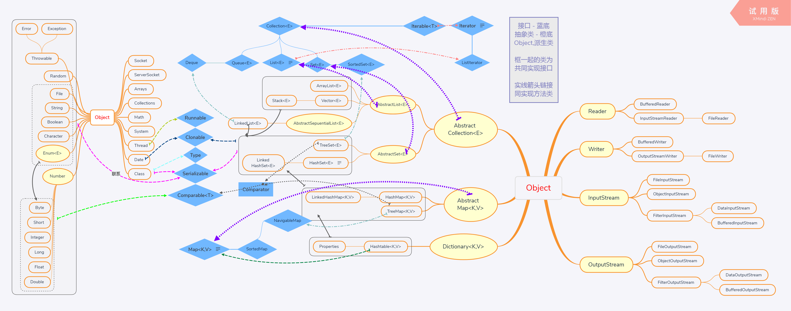

呕心沥血画出此图，希望在使用Java类、接口时捋顺其关系，从而更好的组织程序逻辑---请看

Object分出来的类都是其子类，Iterable接口分出的也是子接口
左边为常用类，中间是集合类与接口，右边为常用IO流类
从继承关系分析，其父类实现的接口子类都被继承
实线链接表示一并实现某一接口
虚线链接表示某类实现某接口
被框起部分类，有实现同一接口的被框起了
集合类被框起来并用实线带箭头链接其来一并实现了Serializable和Clonable接口
图片较大建议下载后查看清晰，后续会继续添加常用类与接口